Communication theory
When studying the transfer and storage of data, there are some underlying physical laws, representations and constraints to consider. Beginning with representations of data and interference/noise, we can derive physical limits on the rate of data transmission.
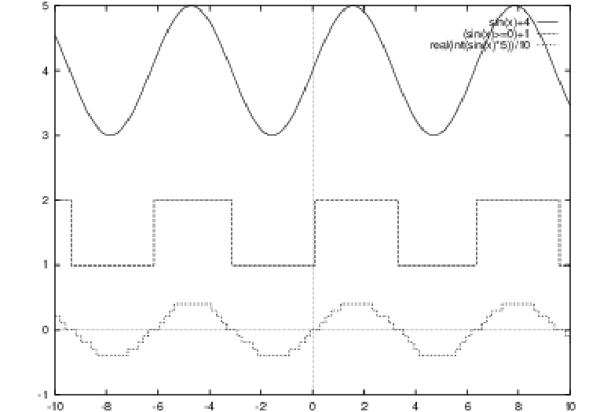
An analog signal is a continuous valued signal. A digital signal is considered to only exist at discrete levels. The (time domain) diagrams are commonly used when considering signals. If you use an oscilloscope, the display normally shows something like that shown above. The plot is amplitude versus time. With any analog signal, the repetition rate (if it repeats) is called the frequency, and is measured in Hertz (pronounced hurts, and written Hz). The peak to peak signal level is called the amplitude.
The simplest analog signal is called the sine wave. If we mix these simple waveforms together, we may create any desired periodic waveform. If we summed these simple waves, with the following amplitudes, the resultant waveform would be a square wave $\(\sum^{\infty}_{n=1}\,\frac{1}{n}\sin(2\pi nf)\mbox{\,\ (for\,\ odd\,\ n)\,\ }\Rightarrow\,\mbox{\,\ a\,\ square\,\ wave}\)$ We may also represent these signals by frequency domain diagrams, which plot the amplitude against frequency. These alternative representations are shown below:
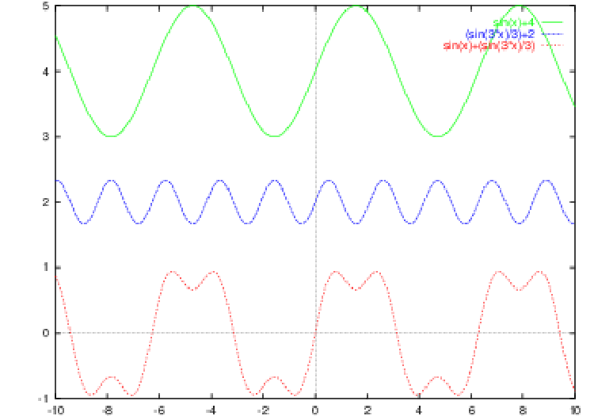
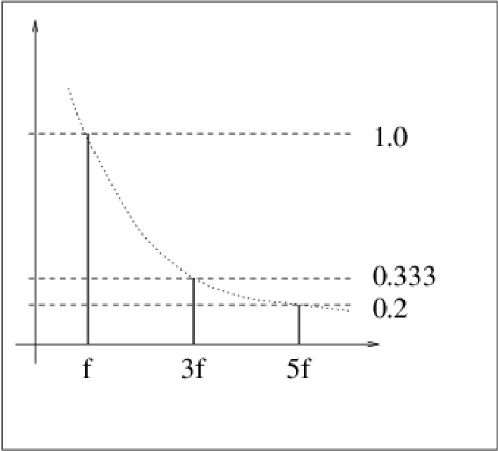
Fourier analysis
When we represent periodic functions as a sum of simple sine (and cosine) waveforms, it is known as Fourier Analysis after Jean-Baptiste Fourier, who first showed the technique. The Fourier method can be viewed as a transformation between equivalent time domain and frequency domain representations. A piecewise continuously differentiable periodic function in the time domain may be transformed to a discrete aperiodic function in the frequency domain. If our time domain function is \(f(t)\) then we normally write the corresponding frequency domain function as \(F(\omega)\), and we use the symbol \(\leftrightarrow\) to represent the transformation: $\(f(t)\leftrightarrow F(\omega)\)$ There are various flavours of Fourier analysis depending on the types of functions in each domain. The table below summarizes the methods used.
| Time domain | Frequency domain | Description | |
|---|---|---|---|
| Continuous, periodic | \(\rightleftarrows\) | Discrete, aperiodic | Fourier series |
| Continuous, aperiodic | \(\rightleftarrows\) | Continuous, aperiodic | Fourier transform |
| Discrete, periodic | \(\rightleftarrows\) | Discrete, periodic | Discrete Fourier series |
| Discrete, aperiodic | \(\rightleftarrows\) | Continuous, periodic | Discrete Fourier transform |
We can see an example of this deconstruction or construction of waveforms by examining a bipolar square wave which can be created by summing the terms: $\(\frac{4}{\pi}(sin(2\pi ft)+\frac{1}{3}sin(6\pi ft)+\frac{1}{5}sin(10\pi ft)+\frac{1}{7}sin(14\pi ft)+...)\)$
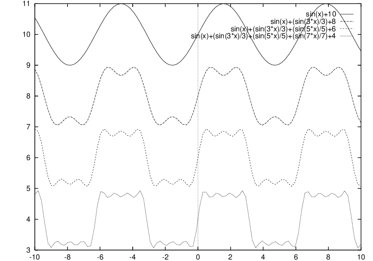
In the figure above, we see four plots, showing the resultant waveforms if we sum the first few terms in the series. As we add more terms, the plot more closely approximates a square wave. Note that there is a direct relationship between the bandwidth of a channel passing this signal, and how accurate it is. If the original (square) signal had a frequency of 1,000Hz, and we were attempting to transmit it over a channel which only passed frequencies from 0 to 1,000Hz, we would get a sine wave. The higher frequency components are important, and are needed to re-create the original signal faithfully.
Fourier transforms
With aperiodic waveforms, we consider the Fourier Transform of our function \(f(t)\), which is the function \(F(\omega)\) given by $\(F(\omega)=\int^{\infty}_{-\infty}f(t)e^{-j\omega t}dt\)$ The inverse transform is \(f(t)=\frac{1}{2\pi}\int^{\infty}_{-\infty}F(\omega)e^{j\omega t}d\omega\).
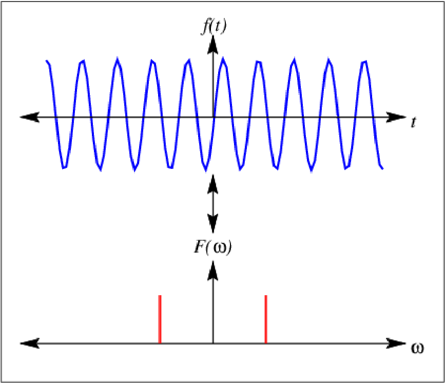
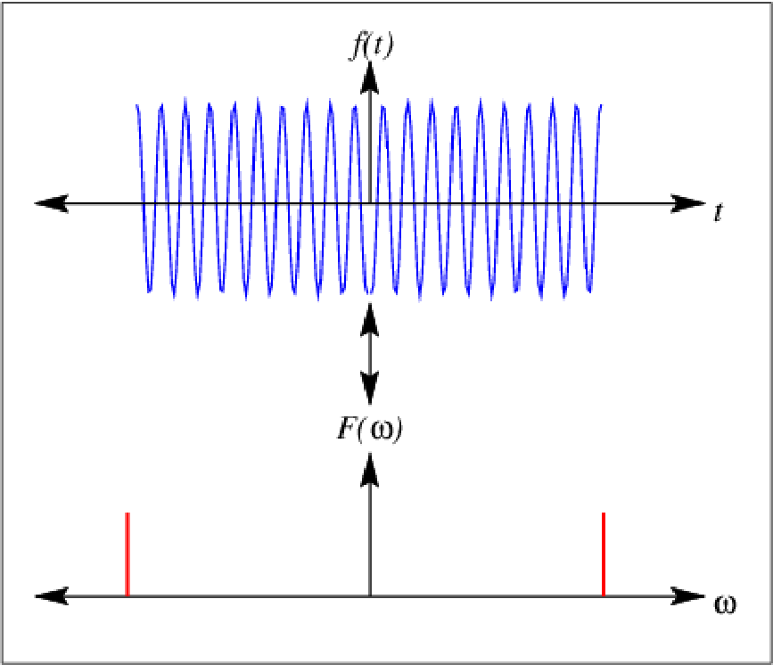
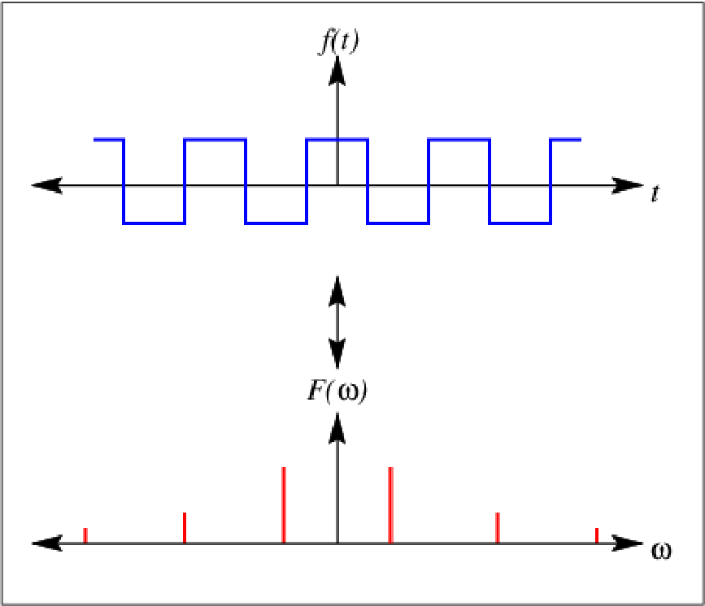
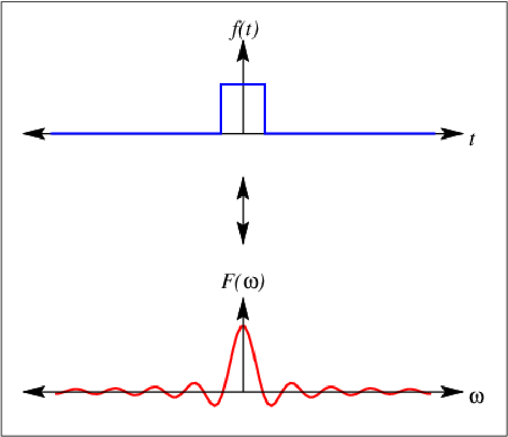
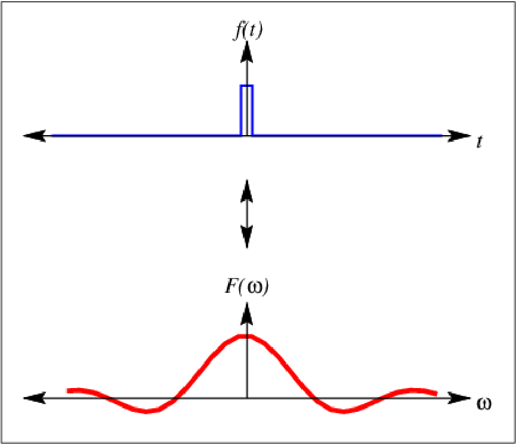
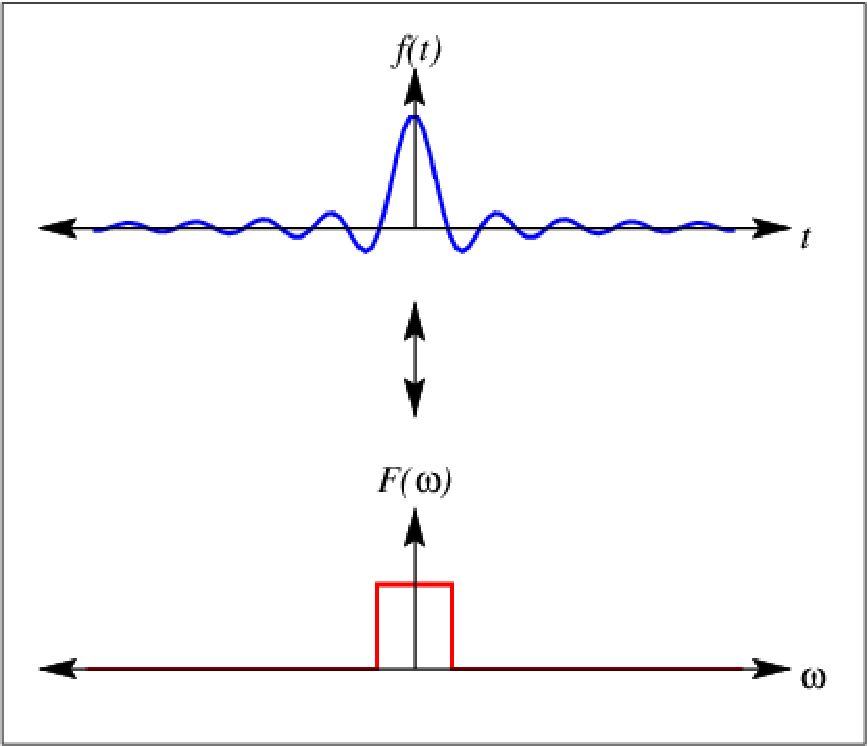
In the figures above we see various simple transforms. Note that if a function in one domain is widened, its transform narrows.
Convolution
One of the theorems in Fourier analysis is the convolution theorem:
Theorem 1. If \(f(t)\) and \(g(t)\) are two functions with Fourier transforms \(F(\omega)\) and \(G(\omega)\), then the Fourier transform of the convolution \(f(t)\star g(t)\) is the product of the Fourier transforms of the functions \(F(\omega)\) and \(G(\omega)\), and vice versa.
The convolution of \(f(t)\) and \(g(t)\) has a graphical interpretation. We can use the graphical interpretation to easily predict the functions that result from complex signal filtering or sampling.
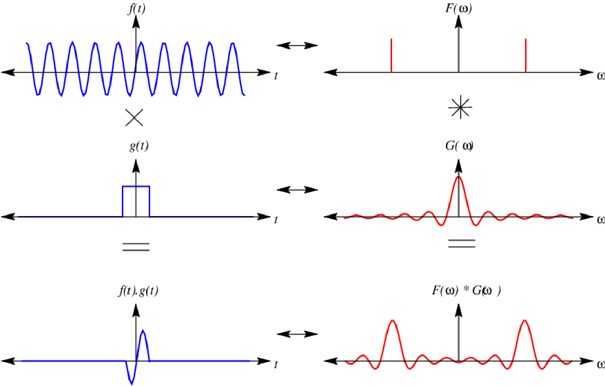
In the above figure, we see a sine wave and a sampling window, each with their own Fourier transform. By multiplying the two waveforms, we end up with a single cycle of the sine wave, and we can deduce its frequency domain representation by convolving the two Fourier transforms.
Shannon and Nyquist
Other important relationships found in data communications relate the bandwidth, data transmission rate and noise. Nyquist shows us that the maximum data rate over a limited bandwidth (H) channel with V discrete levels is:
Maximum data rate = \(2H\,log_{2}V\) bits/sec
For example, two-Level data cannot be transmitted over the telephone network faster than 6,000 BPS, because the bandwidth of the telephone channel is only about 3,000Hz.
Shannon extended this result for noisy (thermal noise) channels:
Maximum BPS = \(H\,log_{2}(1+\frac{S}{N})\) bits/sec
A worked example, with a telephone bandwidth of 3,000 Hz, and using 256 levels:
\(\begin{array}{ccc} D & = & 2*3000*(log_{2}256)\,bps\\ & = & 6000*8\,bps\\ & = & 48000\,bps \end{array}\)
But, if the S/N was 30db (about 1024:1)
\(\begin{array}{ccc} D & = & 3000*(log_{2}1025)\,bps\\ & = & 3000*10\,bps\\ & = & 30000\,bps \end{array}\)
This is a typical maximum bit rate achievable over the telephone network.
In these equations, the assumption is that the relative entropies of the signal and noise are a maximum (that they are random). In practical systems, signals rarely have maximum entropy, and we can do better. There may be methods to compress the data perhaps by differentiating between lossy and lossless compression schemes[^1]. A signal with an entropy of \(0.5\) may not be compressed more than 2:1 unless you use a lossy compression scheme.
Sending signals...
A baseband signal is one in which the data component is directly converted to a signal and transmitted. When the signal is imposed on another signal, the process is called modulation. We may modulate for several reasons: the media may not support the baseband signal, or we may wish to use a single transmission medium to transport many signals. We can use a range of modulation methods, often in combination:
-
Frequency modulation - frequency shift keying (FSK)
-
Amplitude modulation (AM)
-
Phase modulation - phase shift keying (PSK)
-
Combinations of the above (QAM)
Modern systems often use QAM encoding which encode multiple bits for each change of the signal, using different amplitude and phase. V.32 bis uses QAM-128 which provides 6 data bits per symbol and one parity bit. 2400 changes occur a second, so the maximum data transfer rate is 14,400 bps with error correction. This is the fastest transmission rate found in PC modems, but when the data is compressed we can achieve faster data rates.
These techniques are explained in a little more detail below.
Bit transmission
We may send our data synchronised (meaning clocked) or asynchronously (without a clock):
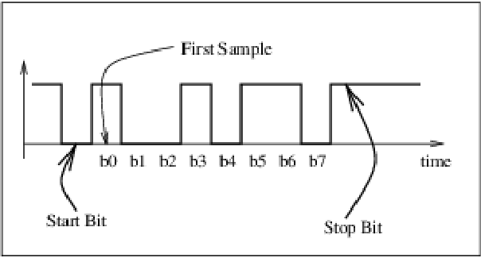
Here we have asynchronous transmission. The reception algorithm is:
-
Receiver listens for start bit transition
-
waits 3T/2 to get b0
-
then T to get b1
-
then T to get b2 ... and so on ...
The implication of this is that both ends must agree on a rate of transmission.
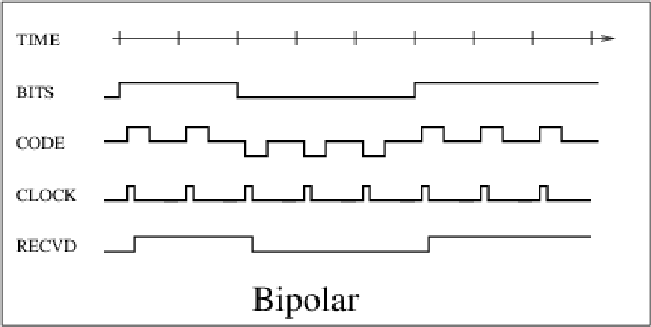
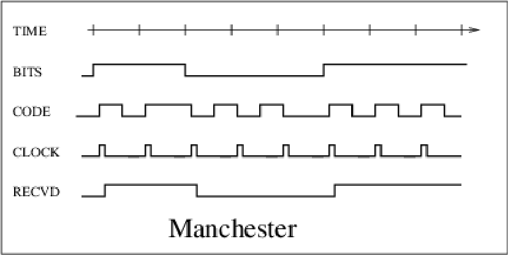
In Bipolar encoding, a ’1’ is transmitted with a positive pulse, a ’0’ with a negative pulse. Since each bit contains an initial transition away from zero volts, a simple circuit can extract this clock signal. This is sometimes called ’return to zero’ encoding.
In Manchester (phase) encoding, there is a transition in the center of each bit cell. A binary ’0’ causes a high to low transition, a binary ’1’ is a low to high transition. The clock retrieval circuitry is slightly more complex than before.
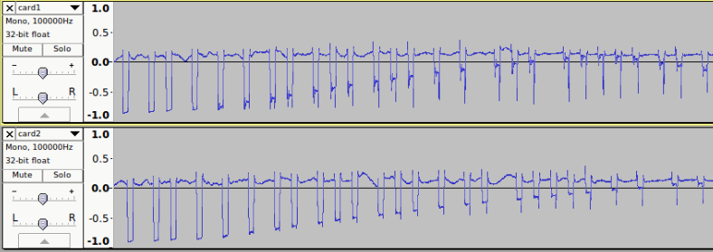
Sometimes decoding these signals is difficult, the signals are buried in other signals. Here is some processed data retrieved from an NFC card by my students. Any algorithm to retrieve the bits must cope with the levels changing, and other noise artifacts.
Modulation
When we transmit data over a media which does not support one of these simple encoding schemes, we may have to modulate a carrier signal, which can be carried over the media we are using. The telephone network supports only a limited range of frequencies.
We use a range of modulation methods, often in combination:
-
AM Amplitude modulation
-
FM/FSK Frequency modulation - frequency shift keying
-
PM/PSK Phase modulation - phase shift keying
With a bandwidth of only 3,000Hz Nyquist shows us that there is no point in sampling more than 6,000 samples per second and if we only sent 1 bit per change in signal, we could only send 6,000 bits/sec. Common modulation methods focus on sending multiple bits per change to increase data rates (up to the maximum determined by noise - Shannon). The most common method is phase modulation, shown below:
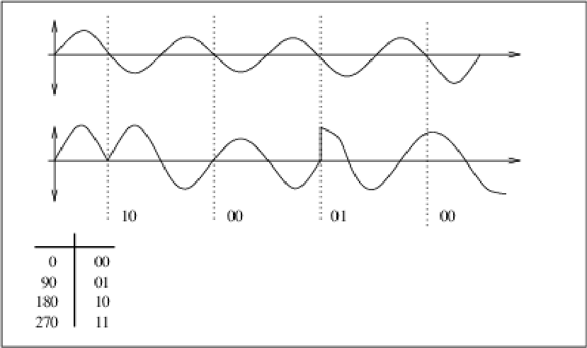
We can also send different amplitudes at the different phases. The following phase plots indicate useful phase/amplitude values:
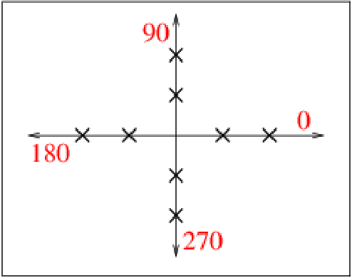
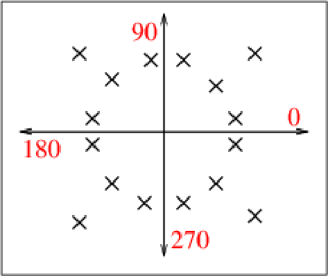
These schemes use multiple amplitudes and phases. They are called QAM[^2]. The one on the left has 2 amplitudes and 4 phases giving a total of 3 bits per change. In the other example, we are sending 4 bits/change (4 bits/baud).
It is common when sending data using a communication scheme to compress the data. Modern systems do some or all of the following to reduce errors and improve speed.
-
Add a parity bit to each 8 bits.
-
Carefully choose where to place bit patterns in the constellation to reduce errors.
-
use (software) compression of the data (MNP5).
MNP5 and V42.bis are compression schemes used on modems. MNP5 suffers from the unfortunate property that it will expand data with maximum or near-maximum entropy (instead of compression). V42.bis does not have this property. It uses a large dictionary, and will not try to compress an already compressed stream.
Another technique is run length encoding, which sends the bytes with a byte count value, and doubles the size of a data stream with maximum entropy.
Sharing the medium
The transmission medium is just the medium by which the data is transferred. The type of medium can have a profound effect. In general there are two types:
-
Those media that support point to point transmission
-
Multiple access systems
One of the principal concerns is ’how to make best use of a shared transmission medium’. Even in a point to point transmission, each end of the transmission may attempt to use the medium and block out the other end’s use of the channel. There are several well known techniques:
-
TDM - Time Division Multiplexing
-
FDM - Frequency Division Multiplexing
-
CSMA - Collision Sense Multiple Access
-
CSMA/CD - CSMA with Collision Detection
Here are some sample mediums for comparison:
DISK or TAPE (Point to point): If you wanted to transmit 1TB (terrabyte) across town to another computer site , and you only had a 1MB/s network to the other site, the whole transfer would take 11 days. The whole process could be much more efficiently performed by copying the data to a disk or tape, sticking it in a courier pack and sending it across town. *There is always more than one way to skin a cat.
TELEPHONE NETWORK (Point to point): The telephone network provides a low bandwidth (300Hz to 3kHz) point to point service, in some countries, backboned on a high speed digital network, but in others through the use of twisted pair cables. There are some problems with the telephone network: Echo suppressors may be in use on long lines to stop line impedance mismatch echoes from interfering with conversations. These echo suppressors enforce one-way voice communication (half duplex), and inhibit full duplex communication. The echo suppressors may be cut out by a pure 2,100 Hz tone. On many telephone networks there is a lot of switching noise - the telephone network is inherently noisy with lots of impulse noise. A 10mS pulse will chop 12 bits out of a 1,200 bits/sec transmission. Finally, these networks have limited bandwidth - An ordinary telephone line has a cutoff frequency of 3,000Hz, enforced by circuitry in the exchanges. If you attempt to transmit 9,600 bps over these lines, the waveform is dramatically changed.
FIBRE OPTICS (Generally point to point): Fibre optic technology is rapidly replacing other techniques for long distance telephone lines. It is also used for large traffic networks, as current technology can transmit data at about 1,000Mbps over 1km. The FDDI[^3] standard specifies 100Mbps over 200km. The Shannon limit is much higher than this again, so there is room for technological advancement.
RADIO. (Multiple Access): Radio is often the transmission medium for digital data transmission. We have WiFi, bluetooth, and other digitial wireless transmission standards. F
Sample ’layer 1’ standards
| Standard | Method | Speed | Dist | Type |
|---|---|---|---|---|
| WiFi | +/- 12v | 10MB/s | 100m | P to P |
| 100m | P to P | |||
| Bluetooth | +/-1v | 220Kb/s | 1.5km | M/drop |
| Radio | 0,+5v | 9600Kb/s | 10m | P to P |
| E/net/UTP | 0,-1.2v | 1000 Mb/s | 90m | P to P |
| 185m | M/drop | |||
| 500m | M/drop | |||
| Fibre (FDDI) | Light | 125Mb/s | 200km | ring |
| Token Ring | 0,+5V | 16Mb/s | 1.5km | ring |
| S. Spect. | Radio | 2Mb/s | 2km | M/drop |
In the table above, we summarise various signalling/communication standards related to computer communications. They range in speed from Kb/s to Gb/s (a range of about 1,000,000:1). The maximum design distances range from 10m to 200km (a range of about 20,000:1). All are in common use at present, and are considered adequate in their application area.
[^1]: JPEG and Wavelet compression schemes can achieve huge data size reductions without visible impairment of images, but the restored images are not the same as the original ones; they just look the same. The lossless compression schemes used in PkZip, gzip or GIF files (LZW) cannot achieve compression ratios as high as that found in JPEG.
[^2]: Quadrature Amplitude Modulation.
[^3]: Fibre Optic Distributed Data Interface